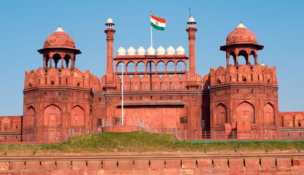
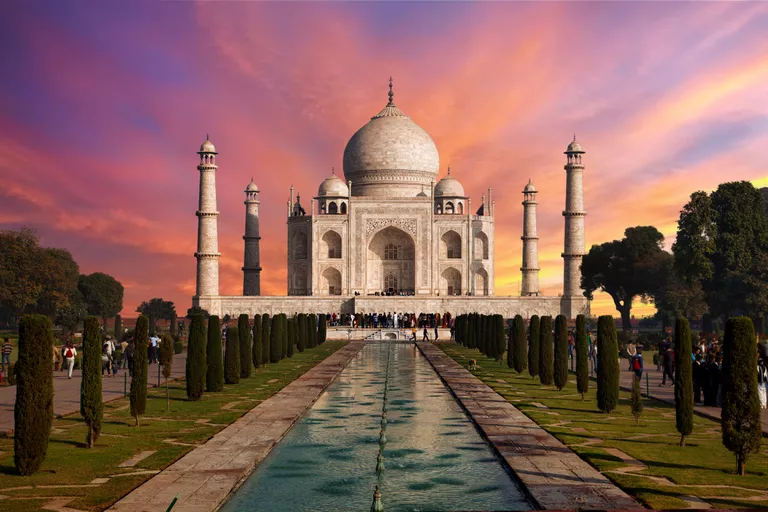
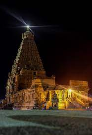
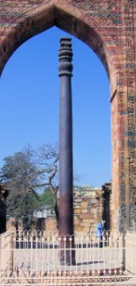

The Red Fort is a historic fort in the city of Delhi in India that served as the main residence of the Mughal Emperors. Emperor Shah Jahan commissioned construction of the Red Fort on 12 May 1638

Taj mahal is also a monument built by shah jahan in hounor to his dead wife,it is one of the 7 wonders of the world

Thanjavur temple it is a temple built by raja raja cholan it is famous for its enourmous size and amazing architecture

Gateway of India The Gateway of India is an arch-monument built in the early 20th century in the city of Mumbai, India. Iron pillar of indiaThe iron pillar of Delhi is a structure 23 feet 8 inches high with 16 inches diameter that was constructed by Chandragupta II
